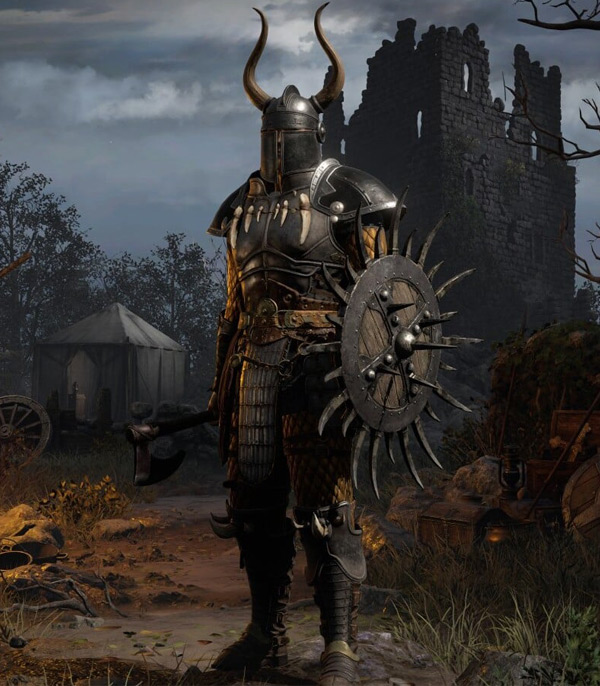
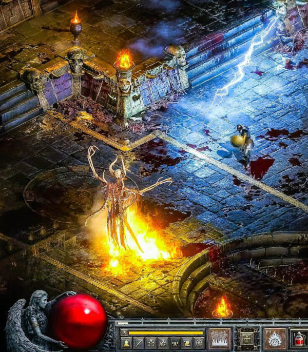
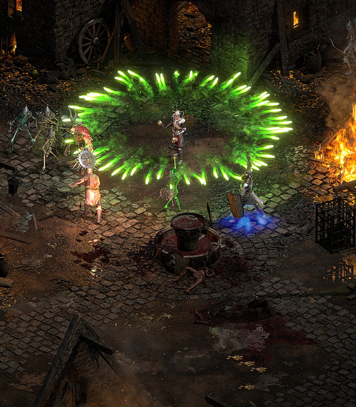

Action RPG
Diablo II: Resurrected is the definitive remastering of Diablo II and its Lord of Destruction expansion—two hallmark entries in Blizzard Entertainment’s genre-defining action role-playing series.

1
Damn good
Veteran players, as well as those who missed out when the original game was first released on PC. Diablo II’s timeless gameplay with modern visuals and audio that take advantage of today’s gaming hardware.

11
CO-OP | PVP
Diablo® II: Resurrected can be played as a solo experience, or grab some friends and enjoy multiplayer co-op. Then blow off some steam and claim a few ears by engaging in thrilling PvP duels outside of town.

111